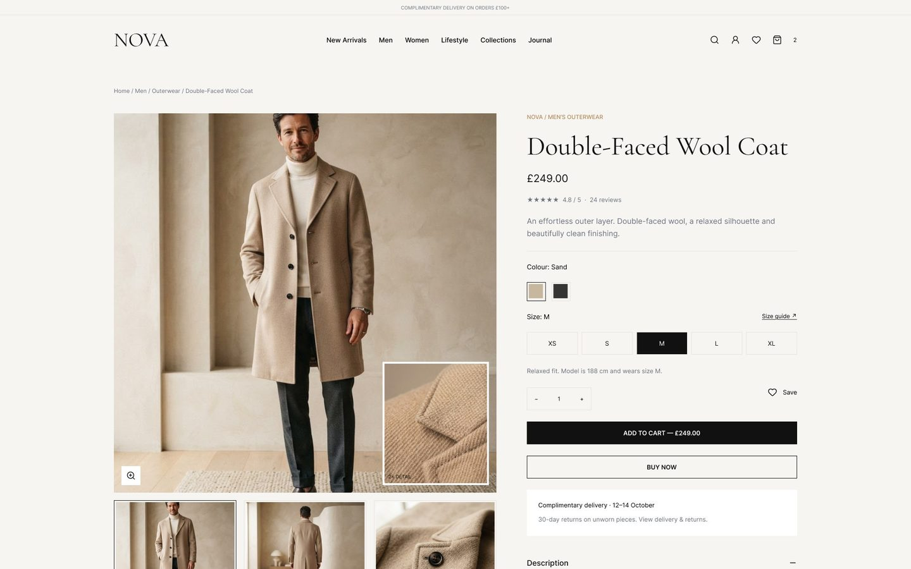

7 Signs Your Shopify Store Needs a Redesign (and What to Fix First)
Traffic is coming in but sales aren’t? These are the warning signs I look for first, and the fixes that usually pay off fastest.

Most store owners don’t need a brand-new website. They need the right parts of their current one to work harder. After designing and auditing a lot of Shopify and WooCommerce stores, I see the same patterns again and again: good products, decent traffic and a store that quietly leaks customers at every step.
Here are the seven signs I look for first, what each one usually means and what I’d fix before touching anything else.
1. People visit, but almost nobody adds to cart
If your analytics show healthy sessions but a tiny add-to-cart rate, the product page isn’t doing its job. Shoppers can’t see what they’re getting, how much it costs in total or why it’s better than the tab they have open next to yours.
- Large, zoomable product photos above the fold on mobile
- Price, delivery cost and delivery time visible next to the button
- Three to five benefit bullets before the long description
- Reviews and trust badges close to the add-to-cart button

A useful test: open your best-selling product on your phone and ask a friend to tell you, in ten seconds, what it costs to get it delivered and when it arrives. If they have to scroll or guess, your customers are guessing too.
2. Your mobile store feels like a shrunken desktop
Most e-commerce traffic now arrives on a phone, yet many themes are still designed desktop-first. Tiny tap targets, menus that cover the whole screen and filters hidden three taps deep all push people away.
Design mobile first: sticky add-to-cart, a thumb-friendly bottom area and filters that open as a simple sheet rather than a new page.
Look at your analytics by device. If mobile visitors convert at a much lower rate than desktop visitors on the same products, the gap is usually design, not intent. People are just as interested on their phones; the store is simply harder to use there.
3. Checkout drops are higher than they should be
Some cart abandonment is normal; people browse and compare. But surprise costs, forced account creation and long forms are avoidable reasons people leave. Baymard Institute’s cart abandonment research is a useful reality check on why shoppers abandon and which fixes matter.
4. The homepage talks about you, not the customer
A hero that says “Welcome to our store” wastes the most valuable space you have. Your homepage should answer three questions in five seconds: what you sell, who it’s for and why it’s worth it. Then give one clear path into the best-selling collection.
- A headline that names the outcome (“Running shoes that last 1,000 km”)
- One primary button to the best-selling collection
- Social proof in the first screen: rating, reviews or press
- A short strip of reasons to buy: delivery, returns, guarantee
5. Navigation and collections are hard to scan
If customers use search for things that should be one click away, your menu is working against you. Group collections the way customers think (by need, size or occasion), not the way your inventory is organised.
6. The store is slow
Heavy apps, uncompressed images and too many fonts make stores slow, and slow stores sell less. Run your homepage and a product page through PageSpeed Insights and look at your Core Web Vitals. Often the fix is design and content discipline, not new code.
7. Your brand has grown, but the store hasn’t
Maybe you started with a free theme and a logo you made in a weekend. If your products, prices or audience have moved upmarket, a dated store makes you look cheaper than you are. This is when a real redesign is worth it: a visual system that matches your brand today, built on a structure that already converts.
A redesign at this stage isn’t about trends. It’s about making the store feel as considered as your products: consistent typography, better photography layouts, a calmer colour system and templates that make every new collection look premium without extra effort.
Common redesign mistakes to avoid
- Changing everything at once, so you can’t tell what worked
- Choosing a theme for its demo photos instead of your products
- Adding apps for every feature until the store slows down
- Hiding shipping and returns information in the footer
- Launching without testing checkout on a real phone
The safest approach is to redesign in phases: product page and cart first, then collections and navigation, then the homepage. Each phase can be measured, so you know the redesign is paying for itself.
What to fix first
- Product page clarity: photos, price, delivery and trust
- Mobile experience: sticky button, thumb zone, simple filters
- Checkout friction: costs upfront, guest checkout, express pay
- Homepage message and the path to your best collection
- Speed and visual polish
Start with a UX audit so you fix the biggest leaks first. If you want a second pair of eyes, send me your store and I’ll show you where shoppers drop off. You can also see how I approached Halcyon and Nova for full e-commerce flows.
Send me your screens and I’ll show you where users drop off and what to fix first.
Quick answers
How do I know if my Shopify store needs a redesign or just fixes?
If your structure works but conversion is low, start with targeted fixes to product pages, mobile and checkout. Redesign when the brand, layout and navigation all hold you back at the same time.
How long does a Shopify store redesign take?
A focused redesign of the homepage, collection, product and cart pages usually takes a few weeks, depending on scope and how many templates need new designs.